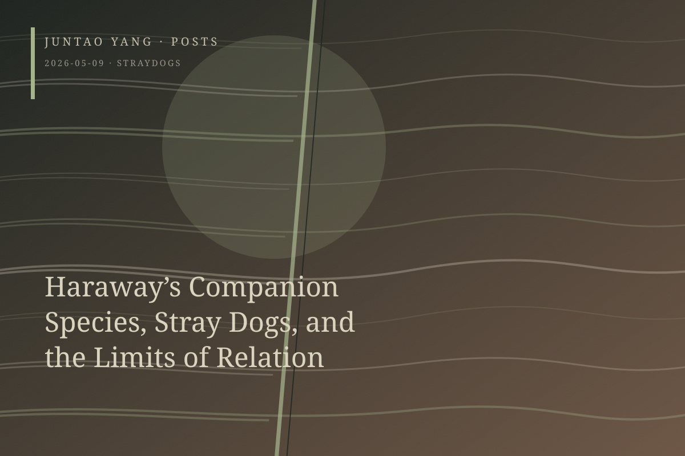

<content>
I have long considered Donna Haraway’s The Companion Species Manifesto her least successful work. She claims an ontology of interspecies entanglement and becoming-with, yet grounds it in descriptions of her own experience and texts drawn from Western dog-breeding culture. She is therefore sympathetic to injurious reproduction, disciplinary breeding, rigorous training, competition, and selection—indeed, she is herself an enthusiast of dog agility.
Haraway is almost unwilling to concede that this relation is radically asymmetrical in its distribution of power. That asymmetry is also the unstable core of American pet-dog culture, or companion-species culture: a language of love and dependence whose reverse side contains only a single thought, that the dog should docilely accept its owner’s love—whether administered through tail docking, sterilization, or other means—and answer with its whole being. Only one correct human-dog relation is allowed to exist. The massive, systematic, nearly indifferent and severe killing of stray dogs forms the institutional underside of this hegemony.
Consider, by contrast, human-dog relations in rural China. Their complexity exceeds the dyad of a loving giver and a docile recipient. Dogs are beaten, cherished, ignored, killed, and eaten. They sometimes bark at people or bite them; sometimes they form packs and wander. More important, they sometimes leave and finally disappear without a trace. This diversity of relations—chaotic, violent, indifferent, and occasionally tender—differs sharply from the normalized singularity of mainstream American pet culture.
The point is neither that dogs in rural China are more independent nor that eating dog meat is morally justified. It is that American pet culture tends to compress human-dog relations into a single form, flattening uncontrolled and oblique encounters. When Haraway argues that species do not first exist and then enter into relations, but are constituted through entanglement, why has the relation itself been settled in advance? A sharper question remains insufficiently confronted: if everything is already relational, has the possibility of withdrawing from relation been canceled from the outset?
Relational ontology is therefore politically cynical. Once nonrelation is excluded from the thinkable, withdrawal becomes ontologically impossible and every separatist impulse is deprived of legitimacy.
I think here of African cosmological thinkers and artists who draw resources from ancient cosmologies to argue for escape—a complete withdrawal from the relational structure imposed by the history of slavery. This radical separatist posture refuses to seek recognition within a framework of relation established by the oppressor. Other intellectuals advocate survival through strategic participation in existing relations, since history has already occurred and no one can return to a pristine state prior to relation. The cosmological position holds, however, that the imagination of withdrawal remains necessary, perhaps as a utopian impulse.
The most radical form of relational diversity may be the refusal to enter into relation. Its structure resembles negative theology: if the most complete discourse on God must include the possibility of silence, then the most complete thought of relation must include the possibility of nonrelation. Perhaps its counter-metaphor is a dog disappearing at the edge of a village, a dog that leaves the human dwelling and never returns. It has withdrawn from relation with us.
</content>
May 9, 2026
Haraway’s Companion Species, Stray Dogs, and the Limits of Relation
Relational ontology becomes politically cynical when it makes withdrawal unthinkable; the stray dog that leaves may figure a more radical freedom.
